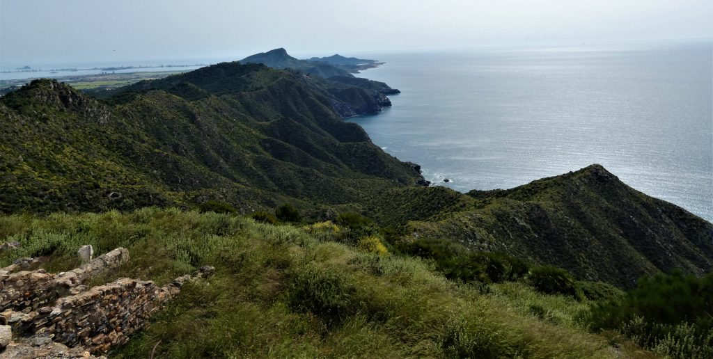

Siempre que mis prisas me llevan a cruzar, casi sin pensarlo, de esquina a esquina, por esos caminos serpenteantes de nuestra Cartagena, hay algo que me impulsa a elevar la mirada. Es un gesto involuntario, como si el propio paisaje me lo pidiera. En cada uno de esos recorridos, el mismo impulso me lleva a buscarlo, a encontrarlo, en lo más alto de los montes: el viejo árbol, solitario, que se erige por encima de todo. La imagen de su figura recortada contra el cielo azul del mediodía o contra la luz suave del atardecer siempre me detiene, aunque solo sea un instante.
El pino carrasco, porque es él quien siempre se deja ver desde las distancias, parece estar esperando, paciente, la mirada de quienes, como yo, pasan rápidamente por su lado. Hay algo en su presencia que me invita a saludarlo, a dedicarle, sin palabras, la más cordial de mis sonrisas. En su robusta figura, con sus ramas extendidas hacia el cielo, veo algo familiar, algo acogedor. No es un simple árbol. Es un guardián silencioso de nuestra tierra, un testigo de todos los momentos que se han vivido en ese lugar, desde los más antiguos hasta los más recientes.
Nunca me canso de mirarlo. Cada vez que paso por ahí, parece que su sombra me cubre con un manto invisible, como un abrazo en la lejanía. Y es que ese pino, que ha crecido en estos montes cartageneros durante generaciones, tiene algo de abuelo querido, de viejo amigo. Es un árbol que ha visto mucho a lo largo de su vida, que ha soportado las tormentas de invierno y los calores abrasadores del verano, pero siempre se ha mantenido firme, enraizado en la tierra, como si no hubiese otra forma de ser.
Hay algo entrañable en esa figura. Quizás es el hecho de que, al igual que los abuelos de las familias cartageneras, este pino ha estado siempre allí, vigilante, esperando el regreso de aquellos que alguna vez lo saludaron con la misma sonrisa que yo. Y aunque no me atrevería a llamarlo “mítico” ni mucho menos, reconozco que, en cada uno de mis pasos por el monte, siempre lo encuentro como una presencia confiable, un punto de referencia en medio de la quietud de los campos.
Recuerdo la primera vez que lo vi con esa misma mirada que ahora le dedico. Era un niño entonces, y el mundo parecía mucho más grande que ahora. Mi abuelo me llevó de la mano por esos mismos caminos, mostrándome los montes que tanto amaba. Me contaba historias de su juventud, de las tardes en que recorría esos senderos con su padre, de cómo el aire salado del mar se mezclaba con el aroma a pino y a tierra mojada. “Este es el alma de Cartagena”, me decía mientras señalaba al horizonte, donde se extendían los montes. “Aquí es donde nacen las raíces de nuestra gente. No lo olvides jamás.”
En ese momento, con mi mirada de niño, no entendí por completo sus palabras. No sabía lo que significaba realmente la tierra de mis ancestros, ni cómo un árbol podía ser mucho más que un ser vivo. Pero ahora, con los años, entiendo perfectamente lo que quería decir. El pino carrasco no solo es un árbol. Es el símbolo de todo lo que nos conecta con nuestra tierra, con nuestra historia. Su presencia en estos montes es el reflejo de esa resistencia, de esa capacidad para seguir creciendo a pesar de las dificultades.
Los montes de Cartagena, con su belleza agreste y su clima implacable, han visto nacer a generaciones de cartageneros. Los pinos carrascos, que se alzan solitarios en las colinas, han sido el refugio de quienes caminaban por esos mismos senderos, ya sea en busca de madera o simplemente para escapar del calor del verano. Esos pinos han sido siempre los mismos, como los abuelos que nos cuentan historias, como los ancianos de los pueblos que mantienen vivas las tradiciones.
En mi mente, a medida que el tiempo pasa, veo cómo este pino sigue siendo el mismo, inalterable, mientras yo soy el que cambia, que se aleja y regresa, que envejece mientras él sigue allí, esperándome con su mirada silenciosa. A veces pienso que el pino sabe más de mí de lo que yo mismo sé de él. Ha sido testigo de mis alegrías y mis tristezas, de los momentos en los que me detuve frente a él a pensar, a respirar profundamente, a encontrar en su sombra un refugio en medio del ajetreo de la vida.
Hoy, como cuando era niño, sigo sonriendo al ver su figura majestuosa en la cima de los montes. Ya no lo saludo solo con una sonrisa inocente, sino con un agradecimiento silencioso, como quien le dice a un viejo amigo lo mucho que le debe. Es un saludo lleno de respeto, de reconocimiento por su constante presencia en mi vida, aunque sea en forma de árbol.
Los pinos carrascos, como este, son parte de nosotros. No solo adornan los paisajes, sino que nos hablan de la fuerza y la resistencia necesarias para vivir en este lugar tan hermoso y tan desafiante a la vez. Los montes cartageneros, con su árido terreno y su belleza serena, son los mismos que nos han formado, que nos han enseñado a resistir, a seguir adelante.
Así, el pino carrasco se convierte, para mí, en algo más que un árbol. Es un símbolo de nuestra tierra, de la historia que nos conecta con los que vinieron antes. Es un testigo callado de nuestra vida, de nuestras raíces profundas que se extienden, como las raíces de ese pino, hacia el corazón mismo de Cartagena.
Y siempre, al pasar junto a él, me detengo por un instante, miro hacia su copa, y le dedico, como siempre, una sonrisa agradecida. Porque en ese gesto, tan pequeño, siento que, de alguna manera, el pino me lo devuelve. Nos entendemos, sin palabras. Y así, seguimos caminando, él en su silencio, yo en mi camino, siempre hacia adelante, siempre hacia ese horizonte donde los montes de Cartagena se funden con el mar.
Historias y Leyendas de Cartagena; para Objetibum Noticias.